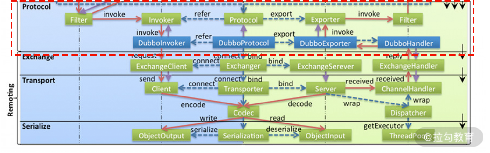
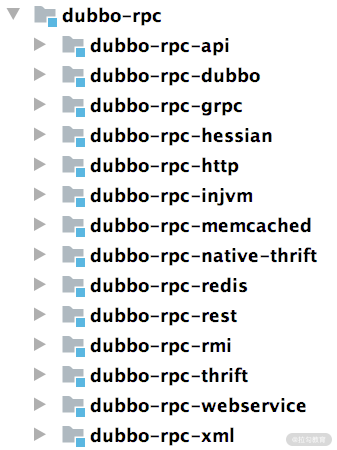
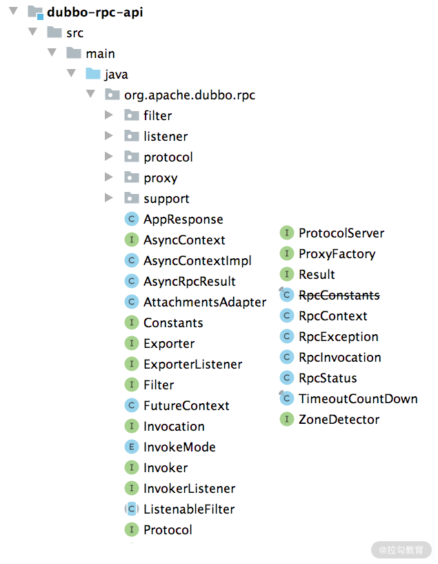
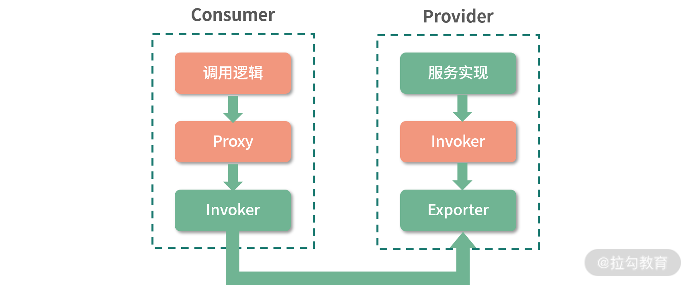

- 00 开篇词 深入掌握 Dubbo 原理与实现，提升你的职场竞争力.md.html
- 01 Dubbo 源码环境搭建：千里之行，始于足下.md.html
- 02 Dubbo 的配置总线：抓住 URL，就理解了半个 Dubbo.md.html
- 03 Dubbo SPI 精析，接口实现两极反转（上）.md.html
- 04 Dubbo SPI 精析，接口实现两极反转（下）.md.html
- 05 海量定时任务，一个时间轮搞定.md.html
- 06 ZooKeeper 与 Curator，求你别用 ZkClient 了（上）.md.html
- 07 ZooKeeper 与 Curator，求你别用 ZkClient 了（下）.md.html
- 08 代理模式与常见实现.md.html
- 09 Netty 入门，用它做网络编程都说好（上）.md.html
- 10 Netty 入门，用它做网络编程都说好（下）.md.html
- 11 简易版 RPC 框架实现（上）.md.html
- 12 简易版 RPC 框架实现（下）.md.html
- 13 本地缓存：降低 ZooKeeper 压力的一个常用手段.md.html
- 14 重试机制是网络操作的基本保证.md.html
- 15 ZooKeeper 注册中心实现，官方推荐注册中心实践.md.html
- 16 Dubbo Serialize 层：多种序列化算法，总有一款适合你.md.html
- 17 Dubbo Remoting 层核心接口分析：这居然是一套兼容所有 NIO 框架的设计？.md.html
- 18 Buffer 缓冲区：我们不生产数据，我们只是数据的搬运工.md.html
- 19 Transporter 层核心实现：编解码与线程模型一文打尽（上）.md.html
- 20 Transporter 层核心实现：编解码与线程模型一文打尽（下）.md.html
- 21 Exchange 层剖析：彻底搞懂 Request-Response 模型（上）.md.html
- 22 Exchange 层剖析：彻底搞懂 Request-Response 模型（下）.md.html
- 23 核心接口介绍，RPC 层骨架梳理.md.html
- 24 从 Protocol 起手，看服务暴露和服务引用的全流程（上）.md.html
- 25 从 Protocol 起手，看服务暴露和服务引用的全流程（下）.md.html
- 26 加餐：直击 Dubbo “心脏”，带你一起探秘 Invoker（上）.md.html
- 27 加餐：直击 Dubbo “心脏”，带你一起探秘 Invoker（下）.md.html
- 28 复杂问题简单化，代理帮你隐藏了多少底层细节？.md.html
- 29 加餐：HTTP 协议 + JSON-RPC，Dubbo 跨语言就是如此简单.md.html
- 30 Filter 接口，扩展 Dubbo 框架的常用手段指北.md.html
- 31 加餐：深潜 Directory 实现，探秘服务目录玄机.md.html
- 32 路由机制：请求到底怎么走，它说了算（上）.md.html
- 33 路由机制：请求到底怎么走，它说了算（下）.md.html
- 34 加餐：初探 Dubbo 动态配置的那些事儿.md.html
- 35 负载均衡：公平公正物尽其用的负载均衡策略，这里都有（上）.md.html
- 36 负载均衡：公平公正物尽其用的负载均衡策略，这里都有（下）.md.html
- 37 集群容错：一个好汉三个帮（上）.md.html
- 38 集群容错：一个好汉三个帮（下）.md.html
- 39 加餐：多个返回值不用怕，Merger 合并器来帮忙.md.html
- 40 加餐：模拟远程调用，Mock 机制帮你搞定.md.html
- 41 加餐：一键通关服务发布全流程.md.html
- 42 加餐：服务引用流程全解析.md.html
- 43 服务自省设计方案：新版本新方案.md.html
- 44 元数据方案深度剖析，如何避免注册中心数据量膨胀？.md.html
- 45 加餐：深入服务自省方案中的服务发布订阅（上）.md.html
- 46 加餐：深入服务自省方案中的服务发布订阅（下）.md.html
- 47 配置中心设计与实现：集中化配置 and 本地化配置，我都要（上）.md.html
- 48 配置中心设计与实现：集中化配置 and 本地化配置，我都要（下）.md.html
- 49 结束语 认真学习，缩小差距.md.html
23 核心接口介绍，RPC 层骨架梳理
在前面的课程中，我们深入介绍了 Dubbo 架构中的 Dubbo Remoting 层的相关内容，了解了 Dubbo 底层的网络模型以及线程模型。从本课时开始，我们就开始介绍 Dubbo Remoting 上面的一层—— Protocol 层（如下图所示），Protocol 层是 Remoting 层的使用者，会通过 Exchangers 门面类创建 ExchangeClient 以及 ExchangeServer，还会创建相应的 ChannelHandler 实现以及 Codec2 实现并交给 Exchange 层进行装饰。

Dubbo 架构中 Protocol 层的位置图
Protocol 层在 Dubbo 源码中对应的是 dubbo-rpc 模块，该模块的结构如下图所示：

dubbo-rpc 模块结构图
我们可以看到有很多模块，和 dubbo-remoting 模块类似，其中 dubbo-rpc-api 是对具体协议、服务暴露、服务引用、代理等的抽象，是整个 Protocol 层的核心。剩余的模块，例如，dubbo-rpc-dubbo、dubbo-rpc-grpc、dubbo-rpc-http 等，都是 Dubbo 支持的具体协议，可以看作dubbo-rpc-api 模块的具体实现。
dubbo-rpc-api
这里我们首先来看 dubbo-rpc-api 模块的包结构，如下图所示：

dubbo-rpc-api 模块的包结构图
根据上图展示的 dubbo-rpc-api 模块的结构，我们可以看到 dubbo-rpc-api 模块包括了以下几个核心包。
- filter 包：在进行服务引用时会进行一系列的过滤，其中包括了很多过滤器。
- listener 包：在服务发布和服务引用的过程中，我们可以添加一些 Listener 来监听相应的事件，与 Listener 相关的接口 Adapter、Wrapper 实现就在这个包内。
- protocol 包：一些实现了 Protocol 接口以及 Invoker 接口的抽象类位于该包之中，它们主要是为 Protocol 接口的具体实现以及 Invoker 接口的具体实现提供一些公共逻辑。
- proxy 包：提供了创建代理的能力，在这个包中支持 JDK 动态代理以及 Javassist 字节码两种方式生成本地代理类。
- support 包：包括了 RpcUtils 工具类、Mock 相关的 Protocol 实现以及 Invoker 实现。
没有在上述 package 中的接口和类，是更为核心的抽象接口，上述 package 内的类更多的是这些接口的实现类。下面我们就来介绍这些在 org.apache.dubbo.rpc 包下的核心接口。
核心接口
在 Dubbo RPC 层中涉及的核心接口有 Invoker、Invocation、Protocol、Result、Exporter、ProtocolServer、Filter 等，这些接口分别抽象了 Dubbo RPC 层的不同概念，看似相互独立，但又相互协同，一起构建出了 DubboRPC 层的骨架。下面我们将逐一介绍这些核心接口的含义。
首先要介绍的是 Dubbo 中非常重要的一个接口——Invoker 接口。可以说，Invoker 渗透在整个 Dubbo 代码实现里，Dubbo 中的很多设计思路都会向 Invoker 这个概念靠拢，但这对于刚接触这部分代码的同学们来说，可能不是很友好。
这里我们借助如下这样一个精简的示意图来对比说明两种最关键的 Invoker：服务提供 Invoker 和服务消费 Invoker。

Invoker 核心示意图
以 dubbo-demo-annotation-consumer 这个示例项目中的 Consumer 为例，它会拿到一个 DemoService 对象，如下所示，这其实是一个代理（即上图中的 Proxy），这个 Proxy 底层就会通过 Invoker 完成网络调用：
@Component("demoServiceComponent")
public class DemoServiceComponent implements DemoService {
@Reference
private DemoService demoService;
@Override
public String sayHello(String name) {
return demoService.sayHello(name);
}
}
紧接着我们再来看一个 dubbo-demo-annotation-provider 示例中的 Provider 实现：
@Service
public class DemoServiceImpl implements DemoService {
@Override
public String sayHello(String name) {
return "Hello " + name + ", response from provider: " + RpcContext.getContext().getLocalAddress();
}
}
这里的 DemoServiceImpl 类会被封装成为一个 AbstractProxyInvoker 实例，并新生成对应的 Exporter 实例。当 Dubbo Protocol 层收到一个请求之后，会找到这个 Exporter 实例，并调用其对应的 AbstractProxyInvoker 实例，从而完成 Provider 逻辑的调用。这里我先帮你找出了最重要的两类 Invoker ，简单介绍了它们工作场景，当然 Dubbo 中还有其他类型的 Invoker，后面我们再一一介绍。
下面来看 Invoker 这个接口的具体定义，如下所示：
public interface Invoker<T> extends Node {
// 服务接口
Class<T> getInterface();
// 进行一次调用，也有人称之为一次"会话"，你可以理解为一次调用
Result invoke(Invocation invocation) throws RpcException;
}
Invocation 接口是 Invoker.invoke() 方法的参数，抽象了一次 RPC 调用的目标服务和方法信息、相关参数信息、具体的参数值以及一些附加信息，具体定义如下：
public interface Invocation {
// 调用Service的唯一标识
String getTargetServiceUniqueName();
// 调用的方法名称
String getMethodName();
// 调用的服务名称
String getServiceName();
// 参数类型集合
Class<?>[] getParameterTypes();
// 参数签名集合
default String[] getCompatibleParamSignatures() {
return Stream.of(getParameterTypes())
.map(Class::getName)
.toArray(String[]::new);
}
// 此次调用具体的参数值
Object[] getArguments();
// 此次调用关联的Invoker对象
Invoker<?> getInvoker();
// Invoker对象可以设置一些KV属性，这些属性并不会传递给Provider
Object put(Object key, Object value);
Object get(Object key);
Map<Object, Object> getAttributes();
// Invocation可以携带一个KV信息作为附加信息，一并传递给Provider，
// 注意与 attribute 的区分
Map<String, String> getAttachments();
Map<String, Object> getObjectAttachments();
void setAttachment(String key, String value);
void setAttachment(String key, Object value);
void setObjectAttachment(String key, Object value);
void setAttachmentIfAbsent(String key, String value);
void setAttachmentIfAbsent(String key, Object value);
void setObjectAttachmentIfAbsent(String key, Object value);
String getAttachment(String key);
Object getObjectAttachment(String key);
String getAttachment(String key, String defaultValue);
Object getObjectAttachment(String key, Object defaultValue);
}
Result 接口是 Invoker.invoke() 方法的返回值，抽象了一次调用的返回值，其中包含了被调用方返回值（或是异常）以及附加信息，我们也可以添加回调方法，在 RPC 调用方法结束时会触发这些回调。Result 接口的具体定义如下：
public interface Result extends Serializable {
// 获取/设置此次调用的返回值
Object getValue();
void setValue(Object value);
// 如果此次调用发生异常，则可以通过下面三个方法获取
Throwable getException();
void setException(Throwable t);
boolean hasException();
// recreate()方法是一个复合操作，如果此次调用发生异常，则直接抛出异常，
// 如果没有异常，则返回结果
Object recreate() throws Throwable;
// 添加一个回调，当RPC调用完成时，会触发这里添加的回调
Result whenCompleteWithContext(BiConsumer<Result, Throwable> fn);
<U> CompletableFuture<U> thenApply(Function<Result, ? extends U> fn);
// 阻塞线程，等待此次RPC调用完成(或是超时)
Result get() throws InterruptedException, ExecutionException;
Result get(long timeout, TimeUnit unit) throws InterruptedException, ExecutionException, TimeoutException;
// Result中同样可以携带附加信息
Map<String, String> getAttachments();
Map<String, Object> getObjectAttachments();
void addAttachments(Map<String, String> map);
void addObjectAttachments(Map<String, Object> map);
void setAttachments(Map<String, String> map);
void setObjectAttachments(Map<String, Object> map);
String getAttachment(String key);
Object getObjectAttachment(String key);
String getAttachment(String key, String defaultValue);
Object getObjectAttachment(String key, Object defaultValue);
void setAttachment(String key, String value);
void setAttachment(String key, Object value);
void setObjectAttachment(String key, Object valu
}
在上面介绍 Provider 端的 Invoker 时提到，我们的业务接口实现会被包装成一个 AbstractProxyInvoker 对象，然后由 Exporter 暴露出去，让 Consumer 可以调用到该服务。Exporter 暴露 Invoker 的实现，说白了，就是让 Provider 能够根据请求的各种信息，找到对应的 Invoker。我们可以维护一个 Map，其中 Key 可以根据请求中的信息构建，Value 为封装相应服务 Bean 的 Exporter 对象，这样就可以实现上述服务发布的要求了。
我们先来看 Exporter 接口的定义：
public interface Exporter<T> {
// 获取底层封装的Invoker对象
Invoker<T> getInvoker();
// 取消发布底层的Invoker对象
void unexport();
}
为了监听服务发布事件以及取消暴露事件，Dubbo 定义了一个 SPI 扩展接口——ExporterListener 接口，其定义如下：
@SPI
public interface ExporterListener {
// 当有服务发布的时候，会触发该方法
void exported(Exporter<?> exporter) throws RpcException;
// 当有服务取消发布的时候，会触发该方法
void unexported(Exporter<?> exporter);
}
虽然 ExporterListener 是个扩展接口，但是 Dubbo 本身并没有提供什么有用的扩展实现，我们需要自己提供具体实现监听感兴趣的事情。
相应地，我们可以添加 InvokerListener 监听器，监听 Consumer 引用服务时触发的事件，InvokerListener 接口的定义如下：
@SPI
public interface InvokerListener {
// 当服务引用的时候，会触发该方法
void referred(Invoker<?> invoker) throws RpcException;
// 当销毁引用的服务时，会触发该方法
void destroyed(Invoker<?> invoker);
}
Protocol 接口是整个 Dubbo Protocol 层的核心接口之一，其中定义了 export() 和 refer() 两个核心方法，具体定义如下：
@SPI("dubbo") // 默认使用DubboProtocol实现
public interface Protocol {
// 默认端口
int getDefaultPort();
// 将一个Invoker暴露出去，export()方法实现需要是幂等的，
// 即同一个服务暴露多次和暴露一次的效果是相同的
@Adaptive
<T> Exporter<T> export(Invoker<T> invoker) throws RpcException;
// 引用一个Invoker，refer()方法会根据参数返回一个Invoker对象，
// Consumer端可以通过这个Invoker请求到Provider端的服务
@Adaptive
<T> Invoker<T> refer(Class<T> type, URL url) throws RpcException;
// 销毁export()方法以及refer()方法使用到的Invoker对象，释放
// 当前Protocol对象底层占用的资源
void destroy();
// 返回当前Protocol底层的全部ProtocolServer
default List<ProtocolServer> getServers() {
return Collections.emptyList();
}
}
在 Protocol 接口的实现中，export() 方法并不是简单地将 Invoker 对象包装成 Exporter 对象返回，其中还涉及代理对象的创建、底层 Server 的启动等操作；refer() 方法除了根据传入的 type 类型以及 URL 参数查询 Invoker 之外，还涉及相关 Client 的创建等操作。
Dubbo 在 Protocol 层专门定义了一个 ProxyFactory 接口，作为创建代理对象的工厂。ProxyFactory 接口是一个扩展接口，其中定义了 getProxy() 方法为 Invoker 创建代理对象，还定义了 getInvoker() 方法将代理对象反向封装成 Invoker 对象。
@SPI("javassist")
public interface ProxyFactory {
// 为传入的Invoker对象创建代理对象
@Adaptive({PROXY_KEY})
<T> T getProxy(Invoker<T> invoker) throws RpcException;
@Adaptive({PROXY_KEY})
<T> T getProxy(Invoker<T> invoker, boolean generic) throws RpcException;
// 将传入的代理对象封装成Invoker对象，可以暂时理解为getProxy()的逆操作
@Adaptive({PROXY_KEY})
<T> Invoker<T> getInvoker(T proxy, Class<T> type, URL url) throws RpcException;
}
看到 ProxyFactory 上的 @SPI 注解，我们知道其默认实现使用 javassist 来创建代码对象，当然，Dubbo 还提供了其他方式来创建代码，例如 JDK 动态代理。
ProtocolServer 接口是对前文介绍的 RemotingServer 的一层简单封装，其实现也都非常简单，这里就不再展开。
最后一个要介绍的核心接口是 Filter 接口。关于 Filter，相信做过 Java Web 编程的同学们会非常熟悉这个基础概念，Java Web 开发中的 Filter 是用来拦截 HTTP 请求的，Dubbo 中的 Filter 接口功能与之类似，是用来拦截 Dubbo 请求的。
在 Dubbo 的 Filter 接口中，定义了一个 invoke() 方法将请求传递给后续的 Invoker 进行处理（后续的这个 Invoker 对象可能是一个 Filter 封装而成的）。Filter 接口的具体定义如下：
@SPI
public interface Filter {
// 将请求传给后续的Invoker进行处理
Result invoke(Invoker<?> invoker, Invocation invocation) throws RpcException;
interface Listener { // 用于监听响应以及异常
void onResponse(Result appResponse, Invoker<?> invoker, Invocation invocation);
void onError(Throwable t, Invoker<?> invoker, Invocation invocation);
}
}
Filter 也是一个扩展接口，Dubbo 提供了丰富的 Filter 实现来进行功能扩展，当然我们也可以提供自己的 Filter 实现来扩展 Dubbo 的功能。
总结
本课时我们首先介绍了 Dubbo RPC 层在整个 Dubbo 框架中所处的位置，然后说明了 dubbo-rpc-api 层的结构以及其中各个包提供的基本功能。接下来，我们还详细介绍了 Dubbo RPC 层中涉及的核心接口，包括 Invoker、Invocation、Protocol、Result、ProxyFactory、ProtocolServer 等核心接口，以及 ExporterListener、Filter 等扩展类的接口。